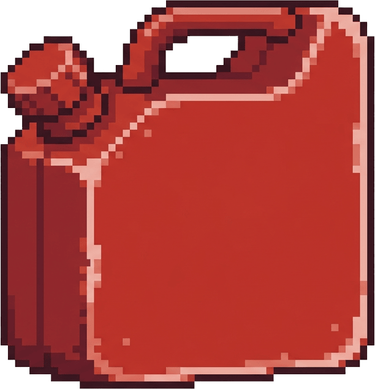
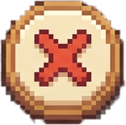
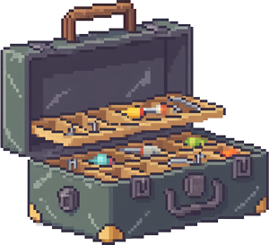
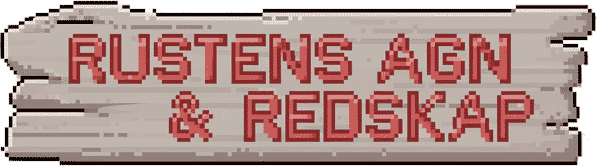
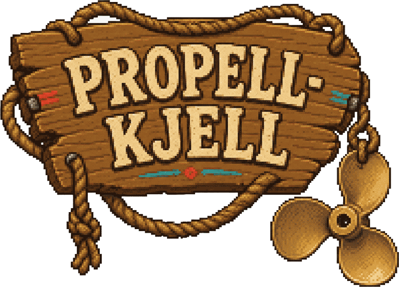
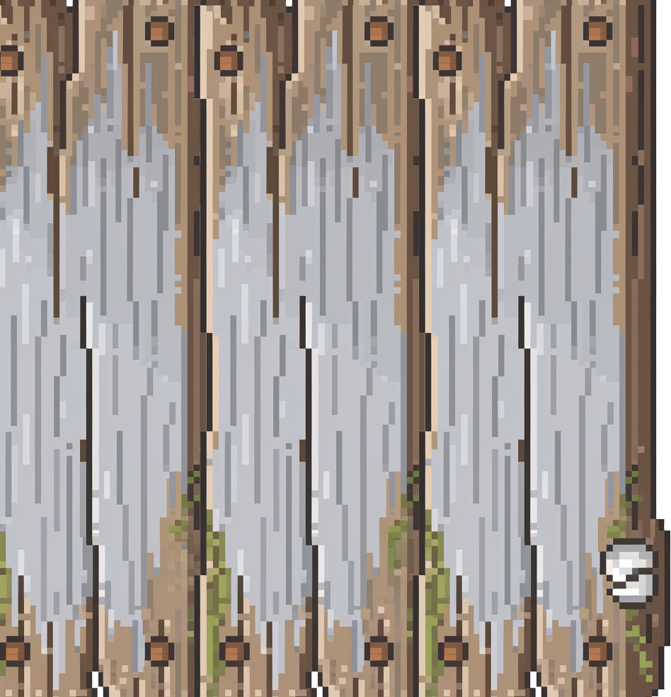
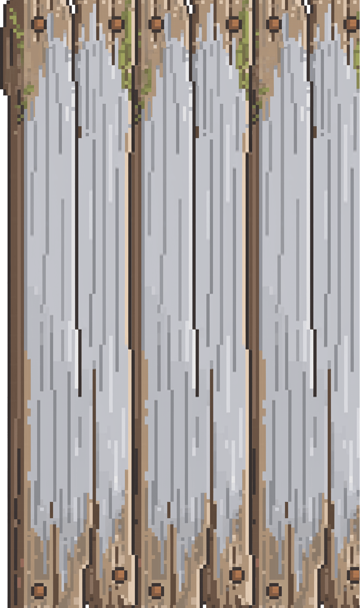

JAKTEN PÅSTORKVEITA
Hvem fisker?
Fisk deg opp fra sei og lyr til du har råd til grovere utstyr — og jakt drømmefangsten: storkveita.
💰 0 kr

Velg dybde og kast ut.


Sluksett
Velg hva du fisker med. Agn brukes opp når fisken tar det — sluken ryker bare når snøret ryker.
Fisk!

🛒 Rustens agn & redskap

🔧 Propell-Kjell — verksted og slip
📖 Fangstboka


🦀 Teinetrekk
Velg fiskeplass.